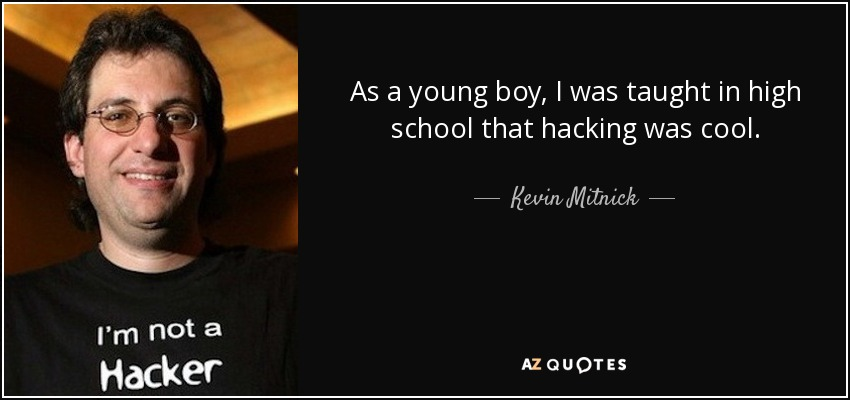
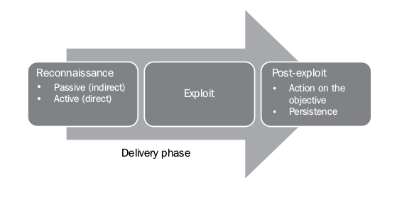
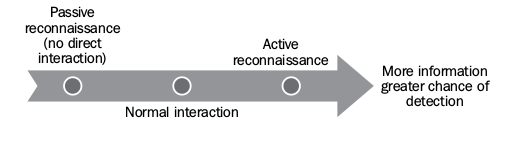
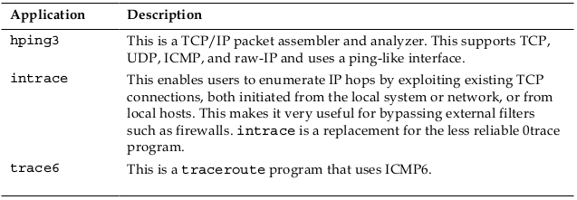
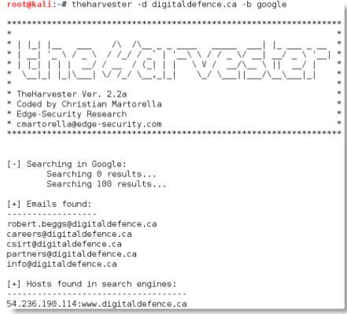
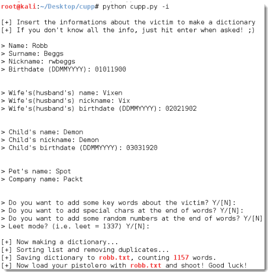

Ethical Hacking
"We work in the dark to serve the light"
Presented by: Edwin Richbald A. Salinas
Found at edos4.github.io/ethical-hacking
Fun tip: Press 'o' to see the overview! :)
Kevin Mitnick: From schoolboy hacker to FBI's most wanted
 Press arrow down. ;)In highschool, Mitnick was asked to write a program to find the first 100 Fibonacci numbers as an assignment.
Instead of doing the homework, he created a fake login screen to steal his teacher's password.
When homework was due, he just said, "I got a better one. Isn't your password 'johnco'?".
Mitnick said, "He was really impressed and he shared it with all the class, so that was the ethics that were taught to me as a kid, that it was cool to hack."
At age 13, he used social engineering and asked the bus driver where to buy a ticket punch for "a school project". Then, he did dumpster diving and used unused transfer slips he found in a dumpster next to the bus company garage. After that, he could ride any bus in the greater LA area
As a teenager, he took control of a McDonald's drive-through ordering system just to watch the surprise of the McDonald's employees.
After his first experience writing a computer program, Mitnick says he became "the guy who pushed the envelope"(extends the limits of what is possible), but he never saw himself as malicious. Rather, he believes he was mischievous, hacking into companies not to steal their data, but for the challenge.
However, throughout the 1980s and '90s things got serious and Mitnick became notorious in law enforcement circles.
He penetrated the systems of more than 40 corporations, including Nokia, Sun Microsystems, Digital Equipment Corporation, Motorola, and Netcom.
Even in the closing stages of the legal pursuit, he says he was still having fun. Realising the FBI was onto him he wire tapped the agents on his case, setting up a warning system to alert him when a call was placed to the officers near his office.
In a middle finger to the FBI, Mitnick cleared out his equipment and left a box of donuts waiting for them.
It all came to an end in 1995 when he was arrested on numerous charges including wire fraud and he served five years in prison.
Lesson?
It is fun!
Jewk! :p
Lesson?
"If you build the guts to do something, anything, then you better save enough to face the consequences."
― Criss Jami, KillosophyBut wait, there's more!
So what happened to Kevin Mitnick?
Our Team has a 100% Success Rate!
We maintain a 100 percent successful track record of being able to penetrate the security of any system we are paid to hack into using a combination of technical exploits and social engineering.
Once one of the FBI's Most Wanted because he hacked into 40 major corporations just for the challenge, Kevin is now a trusted security consultant to the Fortune 500 and governments worldwide.
Ethical Hacking
Ethical Hacking, also known as penetration testing, intrusion testing, or red teaming, is the controversial act of locating weaknesses and vulnerabilities of computer and information systems by duplicating the intent and actions of malicious hackers.
http://wiki.cas.mcmaster.ca/index.php/Ethical_HackingBig words! Nosebleed!
Wha!?

TL;DR
You act as a hacker and hack your system to find weak spots so that bad guys can't use them.
Attacker's Kill Chain
Kill chains are metamodels of an attacker's behavior when they attempt to compromise a network or a particular data system. They are steps taken by an adversary when they are attacking a network.
It does not always proceed in a linear flow as some steps may occur in parallel. Multiple attacks may be launched over time at the same target, and overlapping stages may occur at the same time.
Typical Kill Chain
Reconnaissance Phase
"Reconnaissance time is never wasted time." Military organizations find that it is better to know about the enemy before engaging them. Attackers will also conduct extensive reconnaissance of a target before attacking.
It is estimated that at least 70 percent of the "work effort" of a penetration test or an attack is spent conducting reconnaissance!
Two Types of Reconnaissance
- Active Reconnaissance
- Passive Reconnaissance
Passive Reconnaissance
Analyzing information that is openly available, usually from the target itself or public sources online. The tester or attacker does not interact with the target and activities will not be logged, or will not be traced directly to the tester.
Passive reconnaissance is conducted first to minimize detection.
First Step: Gather Open Source intelligence
OSINT is information collected from public sources, particularly the Internet. Most intelligence and military organizations are actively engaged in OSINT activities to collect information about their targets, and to guard against data leakage about them.
Lifehack
The US Army manual ATP 2-22.9 (http://www.fas.org/irp/doddir/army/atp2-22-9.pdf) and the NATO OSINT manual (http://information-retrieval.info/docs/NATO-OSINT.html) are both available online, and provide excellent technical reviews of how to gather and assess OSINT.
OSINT Gathering
Usually starts with a review of the target's official online presence (website, blogs, social-media pages, and third-party data repositories such as public financial records). Information of interest includes the following:
OSINT Gathering
OSINT Gathering
OSINT Gathering
OSINT Gathering
You're welcome. ;p
OSINT Gathering
DNS reconnaissance and route mapping
Once a tester has identified the targets having an online presence and contain items of interest, the next step is to identify the IP addresses and routes to the target.
WHOIS
The first step in researching the IP address space is to identify the addresses that are assigned to the target site. This is usually accomplished by using the whois command, which queries databases that store information on the registered users of an Internet resource, such as a domain name or IP address.
WHOIS Info Can Be Used To
WHOIS Info Can Be Used To
Mapping the Route to the Target
From an attacker's, or penetration tester's perspective, the traceroute data yields the following important data:
Kali provides the following tools for tracing routes:
Gathering names and e-mail addresses
The theharvester tool is a Python script that searches through popular search engines and other sites for e-mail addresses, hosts, and subdomains.
Gathering names and e-mail addresses
Using theharvester is relatively simple as there are only a few command switches to set. The options available are:
Gathering names and e-mail addresses
Example screenshot:
Profiling users for password lists
Common User Password Profiler (CUPP) allows the tester to generate a wordlist that is specific to a particular user. CUPP was present on Backtrack 5r3; however, it will have to be downloaded for use on Kali. To obtain CUPP, enter the following command:
git clone https://github.com/Mebus/cupp.gitProfiling users for password lists
CUPP is a Python script, and can be simply invoked from the CUPP directory by entering the following command:
python cupp.py -iProfiling users for password lists
Social Engineering: Now You See Me
Social Engineering: Now You See Me
Social Engineering: Now You See Me
The horsemen just needed the pet's name and the mother's maiden name(uncle's lastname is mother's maiden name). All they did was craft a conversation in such a way that it was not obvious that they were after those information.
Summary
Summary
Active Reconnaissance and Vulnerability Scanning
Act like a bad hacker
One way to solve a big problem is to use a supercomputer.
However, many scientists cannot afford them.
A cheaper way to solve a big problem is to split it into smaller problems.
These smaller problems can then be solved by computers talking to each other over a computer network.
Many computers working together... become as powerful as a supercomputer.
hit the arrow right key


hit the arrow down key for more fun
Performance
Computing intensive: The task could consume a lot of time on computing. For example, π (yellow cab)
Data intensive: The task that deals with a lot or large size of files. For example: Google, LHC(Large Hadron Collider), People having a crush on your crush(jewk!).
Robustness
No SPOF (Single Point Of Failure)
Other nodes can execute the same task executed on failed node.
Scalability
Our numbers are
growing
and so are our needs for more computing power.
You may press the right arrow key now. :)
Examples
Fun
Open-source distributed Wifi-Protected Access (WPA) cracker(clickable)

Code is available for you to learn and tinker. Create something good out of it.
"True magic is turning something bad into something good." -Ed Salinas
Effortless Superhero Duties
solve these problems while listening to musicPerks of joining the World Community Grid:

Contributions

How?

Illustranimation

Pic